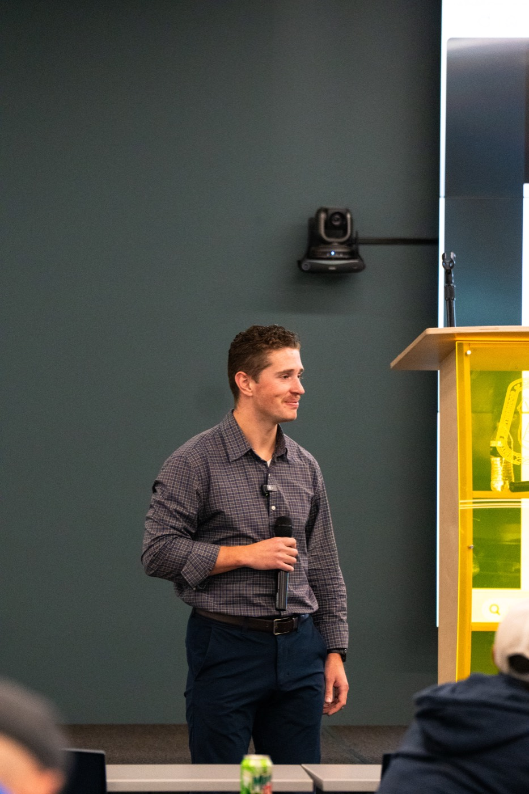
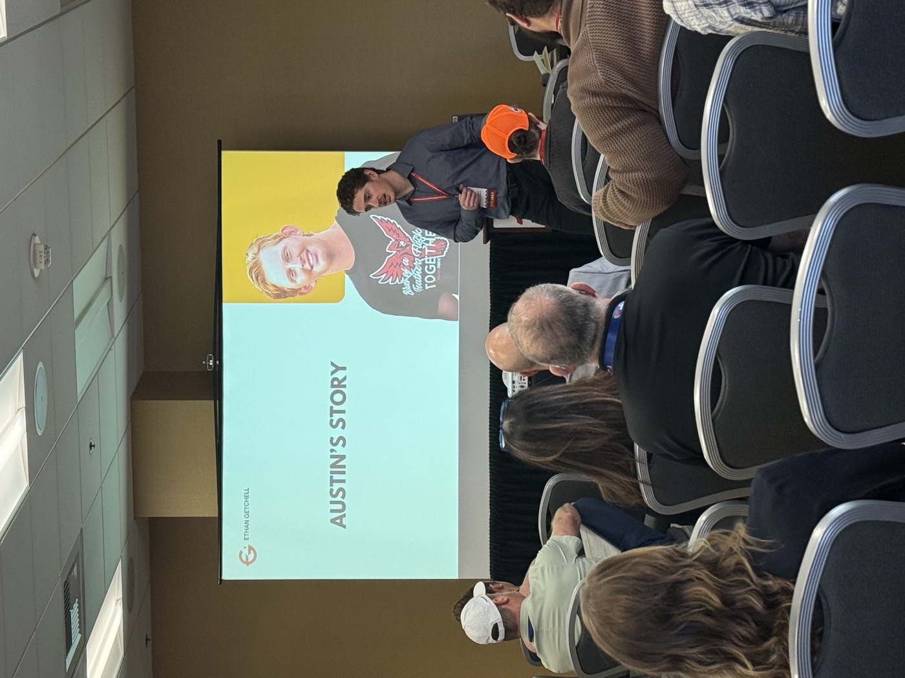

Most people in this space have a story or a credential.
I bring both. I grew up in construction, I lost my brother to suicide, and I trained in social work and psychiatry to understand what happened. Everything I bring to a room comes from that.

From the job site to the clinic and back.
Three generations of construction
I didn't read about construction. I grew up in it. I know the long days, the pressure, and the silence men carry without words. My mother now sits on the Construction Suicide Prevention Week planning committee.
March 2022: Austin
My youngest brother died by suicide a month after his sixteenth birthday. I was working in commercial real estate. That stopped.
Hope College, then Michigan
Bachelor's in Business and Communication, Hope College, 2023. Master of Social Work, University of Michigan, with a focus on interpersonal practice in integrated health, mental health, and substance use.
Michigan Medicine
Clinical social work fellow in Psychiatry. A year in the Adult Depression Clinic, now in the Child & Adolescent Depression Clinic. CBT, DBT, trauma-informed care.
Hope in Hard Hats
Ten construction talks so far in 2026, from break rooms to a national conference. A book. A newsletter. And this site.

AustinKnown for his ginger hair, his humor, and the people he kept close.
Austin was the youngest of three brothers. He took his life at sixteen, leaving behind a community that loved him and a family that didn't see it coming.
His death forced me to look at what men, and boys, do with pain. Mostly, we hide it. We go quiet, and the people around us mistake quiet for fine. I wrote him a letter after he died. It's in the book. It's also the reason every talk I give ends with the same thing: ask the question. Then stay for the answer.
Talking about your mental health will not cost you your man card.
For over two decades I've known what it means to be a man. Looking at your own head only adds to that. Three things I come back to:
Healthy masculinity
Strength that includes asking for help. Not the opposite of it.
Mental health
Treated like physical safety: part of the job, measured, talked about, planned for.
Vulnerability
The thing a crew respects most once one man goes first. Usually the leader.
Things in My Pocket
Stories behind the everyday objects a man carries, and what they reveal. Built around healthy masculinity, emotional intelligence, and mental health. Includes the letter to Austin.
Self-published, July 2023 · 111 pages · Paperback $14.99 · Kindle $9.99
On AmazonPodcasts, interviews, writing
- Candid Conversations on Substack Essays since 2025. "Hope > Hype," "The Longest 30 Seconds," the Toolbox Talk series.
- Depression in Adolescent BoysAccidental Experts podcast, June 2026
- Unsilence Grief with Marie Alessi, June 2024
- Man Cards and Mental Health Easy Speak Speakeasy podcast, June 2024
- Construction Mental Health & Wellbeing ConferenceWorkshop, United Suicide Survivors International, Portland OR, Feb 2026

"Ethan takes a well-needed approach to vulnerability, showing his true strength of a big brother. It takes courage to speak up. It takes a big heart to be a leader. Ethan has all of this and more."
Bring this to your team.
A keynote, a retreat, or a conversation across the table. Start with a call.